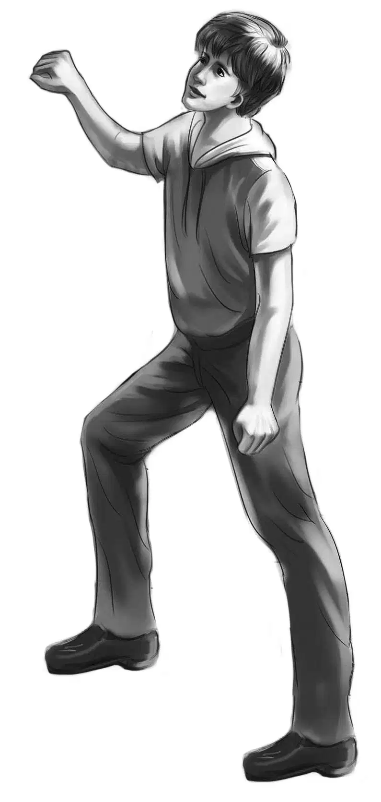
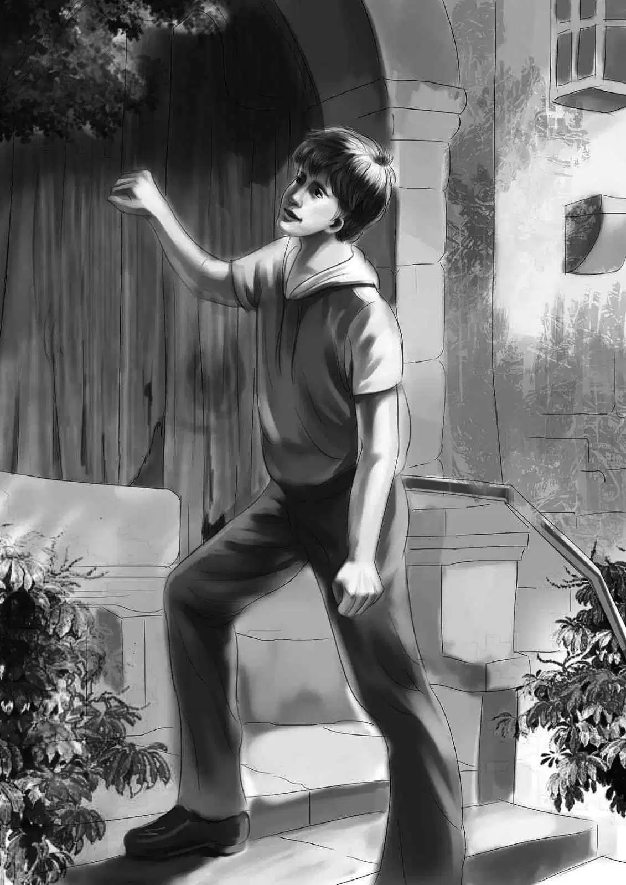
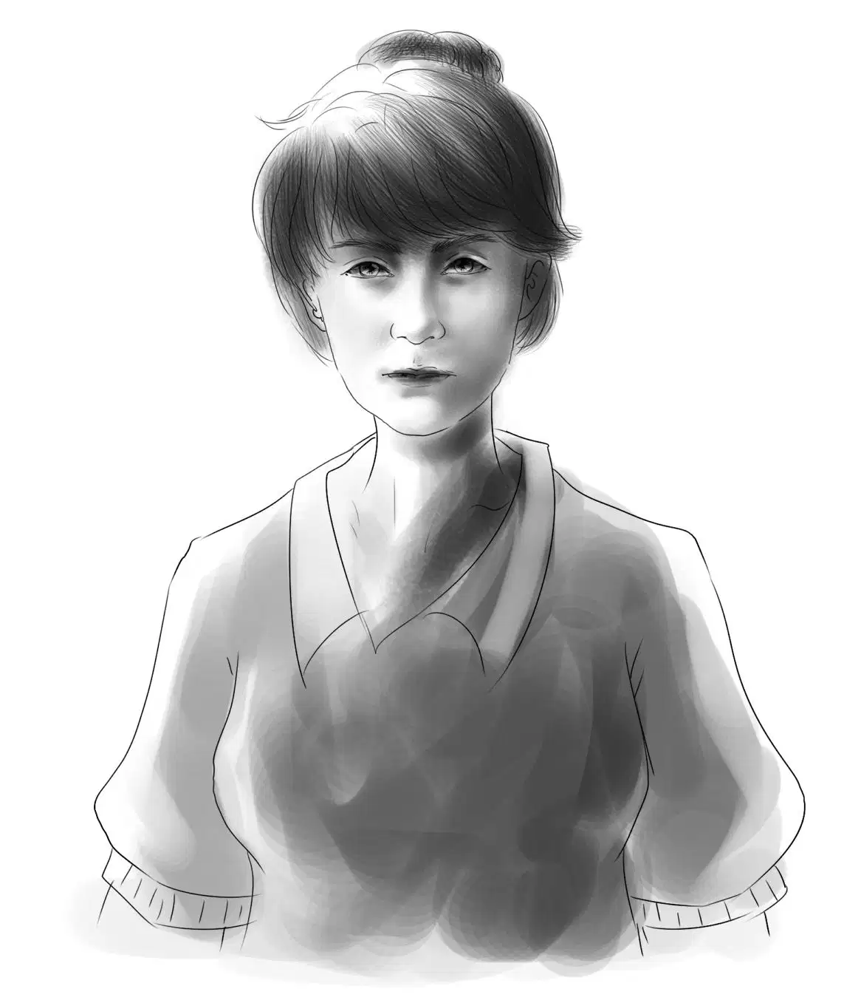

Are Finders Keepers?

班尼将项链盒翻来覆去地看了一下，说道：“我想咱们应该去碧乌镇，把它还给失主。”
“不急，班尼，”亨利说，“或许盒子的主人已经不住在那里了，你想想塔楼屋看起来有多荒凉啊！”
“那，我们可以问问附近的邻居，”班尼赞同道，“说不定药店里的人知道，他们的消息最灵通了，何况塔楼屋几乎就在药店对面。”
杰西说：“说走就走！反正在这里只能躺在沙滩上，怪无聊的。”
“我对那张猫咪的照片好奇得很，”维莉说，“为什么不是人物照呢？”
待维莉收拾好盘子，杰西打扫过厨房后，亨利便锁上房车，驾车载大家去碧乌镇了。
亨利在药店外停好车，他们进去之后很走运：一是药店里没有其他顾客，二是柜台后的店员是个超级话痨。
奥登兄妹买了些信纸和防晒油后，班尼便开口问道：“我可以问您一个问题吗？”
“当然，问吧！”店员说，“你们就住在海岸上安迪的新房车里，不是吗？”
“噢，是的。”班尼回答道。店员对他们如此了解，他着实有些吃惊，毕竟彼此之前并没有打过交道，而他们兄妹第一次到碧乌镇来，也只是去超市购过物。可见，消息在这个小镇上传得有多么飞快！
“我们想向您打听一下街对面塔楼屋的事儿。”班尼说。
“哈，”店员说，“这个还算简单，我知道的和别人一样多——都只了解些皮毛，要知道那是个古怪的地方。”
“我懂。”班尼说，“那么，现在谁住在那儿？屋主又是谁？”
“屋主是谁我不知道，有谁住在那儿，我倒是可以跟你们好好讲讲：塔楼屋里的房间基本没住人，除了背街塔楼的一楼住着一个单身女子，她50岁左右，说自己叫玛丽——不过我可不怎么相信。这个女人倒是挺古怪有趣的。”
奥登兄妹兴奋地互相看了看，事情似乎变得越来越有意思了。
“这位玛丽小姐，除了买吃的或者去邮局，基本是闭门不出，而且她经常选择在星期二的时候出门。她模样儿倒是不错，就是从来不笑，还有不到万不得已，决不开口说一个字。她去超市只挑些蔬菜和肉，然后就付款了。不过有件事儿倒是奇怪得紧，她买了不少便宜肉，我都不知道她怎么吃得完。还有就是，她偶尔会来药店里买些阿司匹林——我知道的就这些了。”
“今天就是星期二呢！”杰西说，“说不定咱们可以和她碰上，聊一会儿。”
“她不会和你们聊天的，”店员摇了摇头，“她可是谈话终结者。要想等她的话，你们得守好久才行，她基本上是快到傍晚，街上没什么人的时候才出门。”
“也许咱们登门拜访会更好一些。”维莉说，“这么做的话，结果会怎样？”
“她不会开门的——你们必须相信我，她从没应过门。很久前，有几个街坊为了表示友好，做过类似的事儿，结果吃了闭门羹，所以现在没人再去了。”
“凡事总得有第一次吧！”班尼说，“不管怎样，在她家里聊天总比在药店里自在。”
“好吧，假如你们真有什么事儿非得跟她说的话，”店员说，“我建议你们试试，反正试试也没啥害处——除了小心灵受点打击外。我巴不得你们去呢，真的！”
班尼暗想：这位先生估计超级好奇，为什么他们这么想见玛丽。不过他懒得解释。
“咱们去碰碰运气，看能不能见到她。”杰西说，“真希望能如愿啊！谢谢您的帮助！”
奥登兄妹走到街上，班尼说：“多亏他了，帮了我们大忙不说，也没追问我们，为什么想去找玛丽。”
“我觉得他肯定超想知道，”亨利赞同道，“不过我并不怪他。咱们走过去，敲敲塔楼边的那个门吧！”
大家走近后，发现果然除了背街塔楼一楼的一个房间外，其他房间都是空置的。而住人的那间屋子，门口和窗后都挂着沉沉的黑色帘子。
“幸亏是白天来，”维莉说，“这老宅子真让人毛骨悚然。”
亨利问道：“项链盒带了吗，班尼？”
“在我的口袋里，用纸包着呢！”班尼回答道，“除非玛丽说出它的样子，不然我才不拿出来！”
杰西打量着塔楼屋，用耳语般的声音说：“我有种被监视的感觉，你们有没有感受到？”

“我们有四个，而玛丽只一个人，”班尼安慰道，“没啥好担心的。”尽管如此，他还是要求，“亨利，你去敲门吧！”
亨利敲了敲门，没有任何反应。
“果然被店员说中了。”班尼建议道，“要不再试一下，亨利？”
亨利换了种有节奏的敲门方式：哒-哒-哒-嘟-哒。
奥登兄妹等了等，让他们意外的是，门居然慢慢打开了，一个妇人出现在门口，注视着来访的客人。
这是一张多么冰冷、阴郁的脸啊，上面没有一丝笑容。

班尼暗想：“要是她稍微友好一点的话，会是个美人呐！”她有着一张非常漂亮的圆脸，一头浅棕色的卷发被紧紧挽到后面，打了个结，她连“你们想要做什么”都懒得问。
亨利打破了沉默：“您是玛丽小姐吗？”
她点点头。
“我们在海滩上发现了一样东西，”亨利继续说道，“它被埋在沙子里，我们想它应该和这座屋子有些瓜葛。”
班尼的手已经握住了纸包里的项链盒，却并没把它从口袋里掏出来。
玛丽用犀利的目光飞快地扫视了一下客人们，说道：“我没有丢失过任何东西，请不要来烦我。”
说完，她关上房门，奥登兄妹听到门被反锁的声音。
“噢，太糟糕了，”维莉感觉自己真的很受伤，“我真替这样的人难过，她肯定非常不开心。”
班尼则在快速思考着，离开塔楼时，他说道：“有两件事不对劲：第一，项链盒盖上的缩写字母是R.L.，这和玛丽的名字不符；第二，门打开时，你们闻到气味了吗？那是什么味道呢？”
亨利皱皱鼻子，“你说得对，班尼，”他说，“是有种很重的气味飘出来——我当时觉得有点像动物园或马戏团里的味道，到底会是什么呢？”
“或许我们没机会弄明白了。”维莉说。
“不，有机会的，维莉，”班尼立刻反驳道，“你们等着瞧吧！咱们曾放弃过任何一个谜团吗？何况这还是最简单的一个，看着吧。”
亨利微笑地注视着班尼：“没错！那么，下一步该怎么办，班尼？”
“吃午饭怎样？”班尼问，“我在主街上看到过两三个吃饭的地方，我想要一块苹果派，吃饱了我的脑瓜才运转得快。”
杰西回头看了一眼塔楼屋，一切如常，并没人从黑压压的窗户后窥视他们，但杰西依然和之前一样，感到忐忑不安。